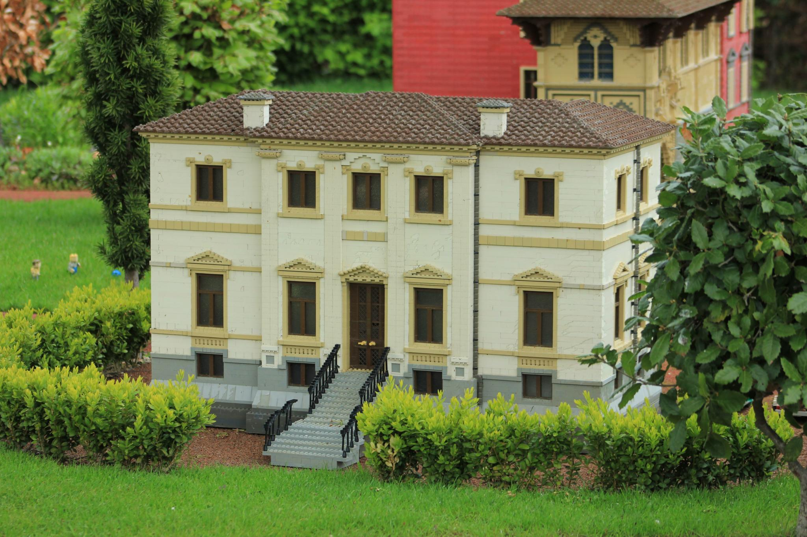
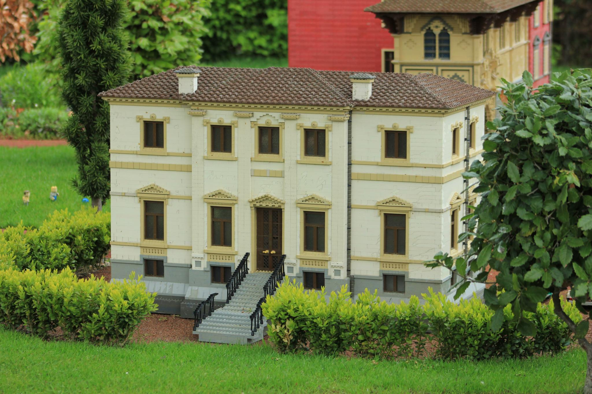
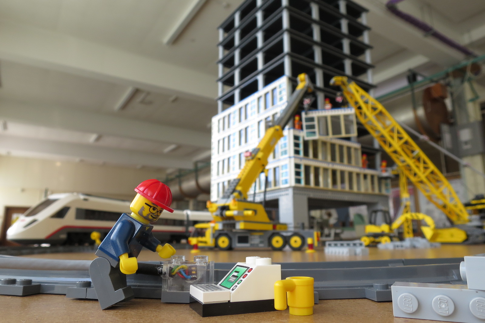

Welcome to a desirable locally global University
With over 700 students enrolling each year from all over the local world, you'll be part of a close-knit vibrant community that really believes in the joy of education
 



Amazing, unique courses both available at undergraduate and postgraduate
Research

World renowned research that will change the world
Quote from a past student:
This is the best and only education I've had
Peter. P. Brick, class of 2015


Victory at inter-university games

Graduation success

Staff rewarded